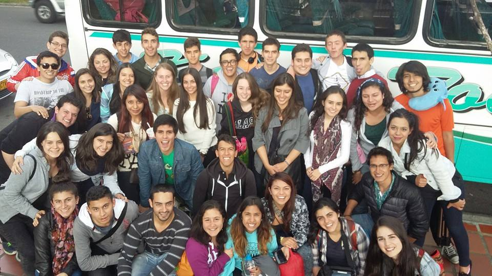

Así empezamos...

Todo empezó con el sueño de un grupo de jóvenes que se cansaron de hacer parte del montón y se lanzaron a ser parte del cambio, emprendieron un proyecto que implica disciplina, liderazgo y pasión. +COLOMBIA nació en el 2014 como una iniciativa de jóvenes para jóvenes. Un grupo de amigos, después de años de trabajo social y de formación en liderazgo, decidió compartir su experiencia con otros jóvenes llamados al servicio. Nuestra motivación es la formación de esos jóvenes líderes, a quienes queremos brindar herramientas que les permitan encontrar problemas, proponer soluciones e identificar oportunidades de transformar sus realidades. No queremos más jóvenes indiferentes a las situaciones que afectan a millones de colombianos, sino jóvenes transformadores.